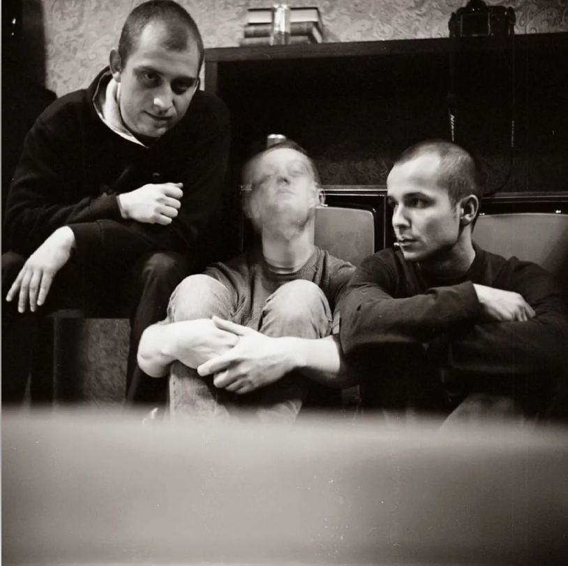
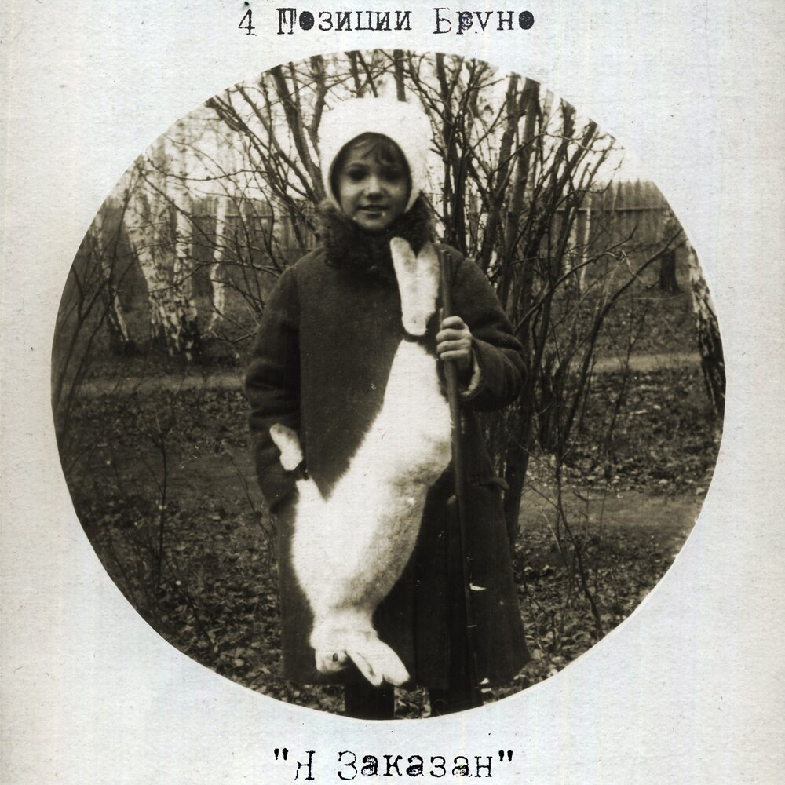
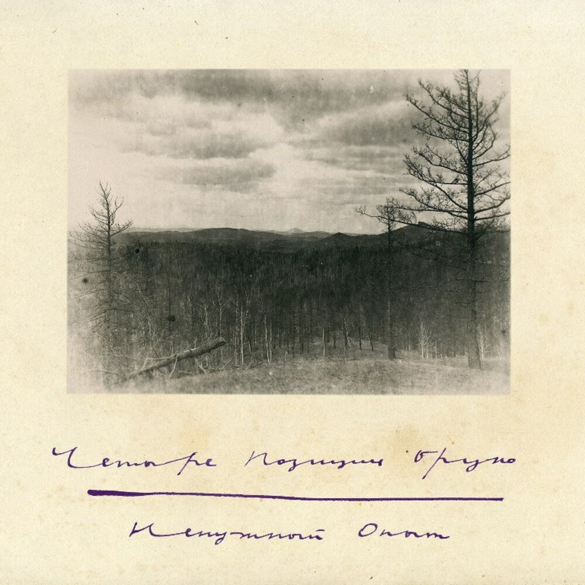
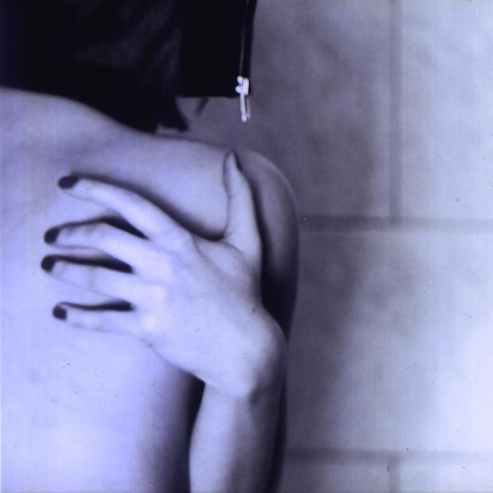
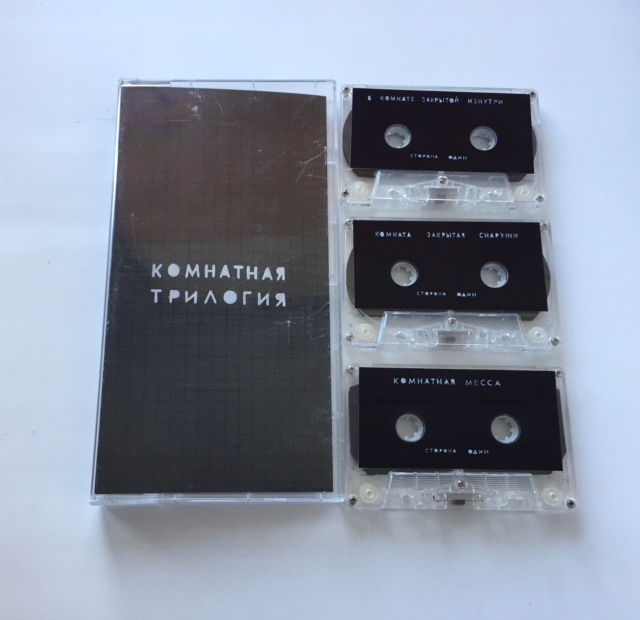

Кто орет? Вот тебе загадка. Подумай об этом.
Участники группы «4 Позиции Бруно» называют собственное творчество экспериментальным, специально доводят смысл песен до абсурда. Лирических героев их произведений трудно назвать социально адаптированными, авторы поднимают темы наркомании и сексуальной распущенности. Критик Артемий Троицкий (внесен Минюстом РФ в реестр иноагентов) назвал парней мастерами тонкого лабораторного создания всякой неудобной, неудобоваримой, будоражащей музыки.

Лакомства

Эти герои — они как будто заказали друг друга в ресторане. Как блюдо. Ты его — на обед, а он тебя — на ужин.

"Ненужный опыт" — это такой опыт, ненужный тебе, ты что-то испытал и хотел бы вернуть всё назад, а не, уже поздно, теперь тебе жить с этим.

Лови настроение, состояния, ее планы. Ты должен появиться там и чувствовать то прошлое, в которое ты вселяешься.

Это когда ты закрылся в комнате, сам, от докучливых людей, сидишь один и потихоньку теряешь ориентацию и вообще любые связи с большим миром.
"В «Бруно» мы навязываем свою реальность, хочешь – принимай, хочешь — нет. «Бруно» другой, тут если тебе понравилось, то уже с тобой что-то не то"
- Антон Клевцов
Первыми узнавайте о новостях группы!